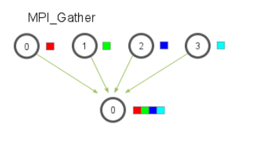

MPI分布式内存编程
本文最后更新于：6 months ago
从Hello,world开始
#include <stdio.h>
#include <string.h>
#include <mpi.h>
const int MAX_STRING = 100;
int main(void)
{
char greeting[MAX_STRING];
int comm_sz; //进程的数量
int my_rank; //进程的编号
MPI_Init(NULL, NULL); //MPI_Init(int* argc_p, char*** argv_p); argc_p和argv_p是指向参数argc和argv的指针
MPI_Comm_size(MPI_COMM_WORLD, &comm_sz); //第一个参数是通信子，是MPI为通信子定义的特殊类型
MPI_Comm_rank(MPI_COMM_WORLD, &my_rank);
if(my_rank != 0)
{
sprintf(greeting, "Greetings from process %d of %d!", my_rank, comm_sz);
MPI_Send(greeting, strlen(greeting)+1, MPI_CHAR, 0, 0, MPI_COMM_WORLD);
}
else
{
printf("Greetings from process %d of %d!\n", my_rank, comm_sz);
for(int q=1; q<comm_sz; q++)
{
MPI_Recv(greeting, MAX_STRING, MPI_CHAR, q, 0, MPI_COMM_WORLD, MPI_STATUS_IGNORE);
printf("%s\n", greeting);
}
}
MPI_Finalize(); //MPI使用完毕时，可以进行释放
return 0;
}编译与运行方法
编译：
$ mpicc -g -Wall -o 执行文件名 C文件名
$ mpicc -g -Wall -o main main.c
运行：
$ mpiexec -n 线程数 ./执行文件名
$ mpiexec -n 4 ./main简单回顾一下上面出现的函数：MPI_Init()、MPI_Finalize()、MPI_Comm_size()、MPI_Comm_rank()、MPI_Send()、MPI_Recv()
通信子指的是一组可以互相发送消息的进程集合
注意：MPI_COMM_WORLD是MPI_Comm类型的变量，即MPI通信子（communicator），不需要额外定义。或者可以理解为一个通信域，你的进程都在这个域里面，里面包含了进程数和进程号等信息。
此外，通信子里面的comm_sz表示进程的数量，my_rank表示进程号，是以指针的形式传递
通信相关的函数：
MPI_Send()、MPI_Recv()
int MPI_Send(
void* msg_buf_p,
int msg_size,
MPI_Datatype msg_type, //前三个参数定义了消息的内容
int dest, //目的进程号
int tag, //小标签，用于区分看上去完全一样的消息
MPI_Comm communicator); //通信子int MPI_Recv(
void* msg_buf_p,
int buf_size,
MPI_Datatype buf_type, //前三个参数定义了接收消息的内容
int source, //消息来自哪个进程
int tag,
MPI_Comm communicator, //后三个参数用来识别消息
MPI_Status* status_p); //大部分不使用该参数，只需赋予特殊常量MPI_STATUS_IGNORE
特殊常量：MPI_ANY_TAG，可以将它传给MPI_Recv的参数tag。称为通配符（wildcard）。可以使一个进程接收多条来自另一个进程的有着不同标签的消息。
关于发送和接收消息的过程
MPI_Send有两种可能：缓冲与阻塞
- 缓冲：即消息会存放在一个发送缓冲区中，而MPI_Send函数立即返回
- 阻塞：即系统将发生阻塞，一直等待，直到开始发送消息
出现哪一种情况一般取决于默认的消息截止大小（”cutoff” message size）。如果消息的大小小于截止大小，则它会被缓冲；如果消息的大小大于截止大小，函数将会被阻塞
MPI_Recv则只有一种可能——阻塞。只有当收到一条匹配消息的时候，才会返回。
MPI消息的特性
不可超越性（nonovertaking），即一个q进程发送两条消息给r进程，这两条消息一定是按顺序的。
而多个进程发送消息则会出现异步性
集合通信
集合通信相关函数：MPI_Reduce()
int MPI_Reduce(
void* input_data_p,
void* output_data_p,
int count, //若count大于1，则MPI_Reduce函数可以应用到数组上，对向量进行运算
MPI_Datatype datatype,
MPI_Op operator, //关键参数，类型是MPI_Op，有多个预定义值
int dest_process,
MPI_comm comm);
关于集合通信
一般情况下，count设置为1，用于一个变量的集体运算，如：
MPI_Reduce(&local_int, &total_int, 1 ,MPI_DOUBLE, MPI_SUM, 0, MPI_COMM_WORLD);如果设置count>1，则是对一个向量的运算，如：
double local_x[N], sum[N];
MPI_Reduce(local_x, sum, N, MPI_DOUBLE, MPI_SUM, 0, MPI_COMM_WORLD);集合通信的特点
- 通信子中的所有进程必须调用相同的集合通信函数
- 每个进程传递给MPI集合通信函数的参数必须是“相容的”。比如，dest_process的值应该是相同的
- 参数
output_data_p虽然只作用在目的进程中，但是其他进程也需要写上这个参数，会被置为NULL 集合通信不使用标签，只通过通信子和调用的顺序进行匹配。具体可看书本p69。
禁止使input_data_p和output_data_p使用同一个缓冲区，这将会不可预测。
蝶形结构
int MPI_AllReduce(
void* input_data_p,
void* output_data_p,
int count, //若count大于1，则MPI_Reduce函数可以应用到数组上，对向量进行运算
MPI_Datatype datatype,
MPI_Op operator, //关键参数，类型是MPI_Op，有多个预定义值
MPI_comm comm);它的基本参数与reduce一致，唯一的不同是没有dest_process，这是因为它是将结果发布给所有的进程。是reduce的一个相反的过程
蝶形结构：即进行全局运算之后，将结构发送给所有的进程
广播函数
int MPI_Bcast(
void* data_p, //广播进程发送的数据，接收进程接收的数据
int count, //数组的大小
MPI_Datatype datatype,
int source_proc,
MPI_Comm comm);数据分发
划分的方式：
- 块划分
- 循环划分
- 块-循环划分
散射：用于0号进程读入整个向量，但只将分量发送给需要分量的其他进程：
int MPI_Scatter(
void* send_buf_p,
int send_count, //发送的向量大小，注意这里的大小是本地大小
MPI_Datatype send_type,
void* recv_buf_p,
int recv_count, //接收的向量大小
MPI_Datatype recv_type,
int src_proc,
MPI_Comm comm);MPI_Scatter只适用于块划分法
需要注意的是，发送的向量大小不是send_buf_p的大小，而是和recv_count一样的，真正发送出去的大小
聚集：将向量的所有分量都收集到0号进程上，然后0号进程再进行输出
int MPI_Gather(
void* send_buf_p,
int send_count, //发送的向量大小，注意这里的大小是本地大小
MPI_Datatype send_type,
void* recv_buf_p,
int recv_count, //接收的向量大小
MPI_Datatype recv_type,
int dst_proc,
MPI_Comm comm);MPI_Gather同样只适用于块划分法，基本结构与MPI_Scatter类似
全局聚集：将向量的所有分量都收集后，再分发到所有的进程上
int MPI_AllGather(
void* send_buf_p,
int send_count, //发送的向量大小，注意这里的大小是本地大小
MPI_Datatype send_type,
void* recv_buf_p,
int recv_count, //接收的向量大小
MPI_Datatype recv_type,
MPI_Comm comm);好图，总结一下：
 |
 |
|  |  |
派生数据类型
由于发送消息耗费的时间巨大，我们要尽可能地减少消息的发送。具体有三种方法：
- 通信函数中的count参数
- 派生数据类型
- MPI_Pack/Unpack函数
MPI_Type_create_struct(
int count,//元素的数量
int array_of_blocklengths[],//每种元素的长度
MPI_Aint array_of_displacements[],//每种元素的地址,距离消息起始位的地址
MPI_Datatype array_of_types[],
MPI_Datatype* new_type_p //输出的新的类型
);如何获取地址呢？
int MPI_Get_address(
void* location_p,
MPI_Aint* address_p);计时
MPI自带一个函数：
double start,finish;
start = MPI.Wtime();
/*串行代码*/
finish = MPI_Wtime();
printf("%e",finish-start);也可以使用timer库函数，他们两个返回的都是墙上时钟时间：
#include "timer.h"
double start,finish;
GET_TIME(start);
/*串行代码*/
GET_TIME(finish);
printf("%e",finish-start);当然，上述的两种写法，一般用于串行代码的计时。回想第二章所学，计时需要先同步，并记录每个进程最大值，最终获取并行部分代码运行的总时间。
double local_start, local_finish, local_elapsed, elapsed;
/*进程的一些初始化*/
MPI_Barrier(comm);
local_start = MPI_Wtime();
/*需要计时的代码*/
local_finish = MPI_Wtime();
local_elapsed = local_finish - local_start;
MPI_Reduce(&local_elapsed, &elapsed, 1, MPI_DOUBLE, MPI_MAX, 0 , comm); //获取进程时间的最大值
if(my_rank == 0)
printf("Elapsed time = %e seconds\n", elapsed);交换奇偶排序
是冒泡排序的一种扩展。
定理：设A是一个拥有n个键值的列表，作为就交换排序算法的输入，那么经过n个阶段后，A能够排好序。
定理：如果p个进程运行并行奇偶交换排序算法，则p个阶段后，输入列表排序完毕。
重点，再看看书本P86~88
安全性
回忆之前的，MPI_Send有两种不同的方式来实现：缓冲和阻塞。假设所有的进程都进入阻塞状态，就会导致没有进程使用MPI_Recv，进入死锁状态。
幸好，MPI提供了一个函数，它会执行一次阻塞的消息发送函数和一次消息接收函数
int MPI_Sendrecv(
void* send_buf_p,
int send_size,
MPI_Datatype send_type,
int dest,
int send_tag,
void* recv_buf_p,
int recv_size,
MPI_Datatype recv_type,
int source,
int recv_tag,
MPI_Comm communicator,
MPI_Status* status_p); //大部分不使用该参数，只需赋予特殊常量MPI_STATUS_IGNORE如果接收缓冲区和发送缓冲区是一样的话，还有另一个函数：
int MPI_Sendrecv(
void* msg_buf_p,
int msg_size,
MPI_Datatype msg_type,
int dest,
int send_tag,
int source,
int recv_tag,
MPI_Comm communicator,
MPI_Status* status_p); //大部分不使用该参数，只需赋予特殊常量MPI_STATUS_IGNORE本博客所有文章除特别声明外，均采用 CC BY-SA 4.0 协议 ，转载请注明出处！